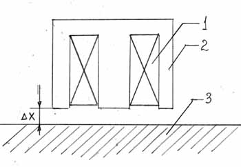
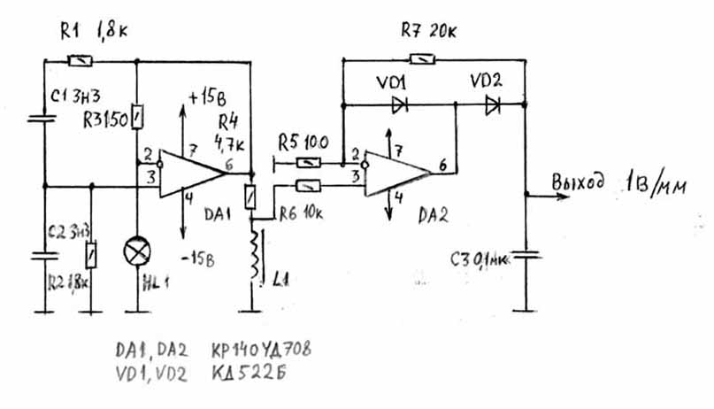

Индуктивный датчик положения
и малых линейных перемещений
Индуктивный датчик положения и малых (около 1 мм) линейных перемещений разрабатывался для применения в магнитных подшипниках и магнитных подвесах [1].
Введение
Одной из проблем, возникающих при разработке магнитных подшипников, является выбор датчика положения подвешенного ротора. Датчик положения должен удовлетворять ряду требований: быть достаточно простым в реализации, иметь высокую линейность характеристики, высокую чувствительность и помехозащищенность, обладать достаточной надежностью. Ротор магнитного подшипника имеет три - шесть поступательных степеней свободы, поэтому конструкция требует установки соответствующего количества датчиков. Каждый из них должен реагировать на изменение соответствующей координаты и быть нечувствительным к изменениям других (развязка по координатам). В качестве датчика положения возможно применение оптоэлектронных, емкостных, индуктивных датчиков. Оптоэлектронный датчик положения обладает высокой чувствительностью и линейностью, достаточно прост в реализации, но требует защиты от паразитной засветки и не дает хорошей развязки по координатам. Емкостной датчик положения отличается сложностью электронного оборудования, большими габаритами чувствительных элементов, низкой чувствительностью и также не дает хорошей развязки по координатам. По совокупности характеристик в качестве датчика положения наиболее подходящим является индуктивный датчик. Он достаточно прост в изготовлении, его чувствительность ненамного меньше, чем у оптоэлектронного, а помехозащищенность наиболее высокая по сравнению с рассмотренными датчиками. Кроме того, этот тип датчика позволяет использовать наиболее малогабаритные чувствительные элементы и достигать таким образом хорошей развязки по координатам.
Принцип работы
Работа индуктивного датчика положения основана на изменении индукции чувствительного элемента при изменении зазора между ним и ферромагнитным движущимся объектом. Вариант конструкции чувствительного элемента представлен на рис. 1. На половине ферритового кольца К7 х 4 х 2 600НН намотана обмотка из 100 витков провода ПЭВ-2 диаметром 0.05 мм. Торцы сердечника отшлифованы с применением алмазной пасты. Качество их поверхности определяет чувствительность и линейность датчика. Возможно также исполнение датчика в открытом со стороны подвижного ферромагнитного объекта броневом ферритовом сердечнике (внешний диаметр до 10 мм, параметры обмотки те же) с центральным стержнем. Перемещающийся объект, положение которого контролируется с помощью датчика, должен быть ферромагнитным (из материала с высокой магнитной проницаемостью). Возможно нанесение такого материала на движущийся объект в зоне чувствительности датчика.

Рис. 1. Конструкция чувствительного элемента индуктивного датчика положения (на полукольце и в броневом сердечнике): 1 - обмотка, 2 - ферритовый сердечник, 3 - ферромагнитное основание (движущийся объект).
Конструкция электронной части
Принципиальная схема индуктивного датчика положения показана на рис. 2. На микросхеме DA1 (КР140УД708) собран генератор синусоидального сигнала частотой около 20 кГц и амплитудой около 2 В. Частота генератора задается элементами R1C1R2C2. В цепь отрицательной обратной связи для поддержания необходимого коэффициента усиления включена лампа накаливания HL1. Напряжение с генератора через резистор R4 подается на обмотку L1 чувствительного элемента датчика. Напряжение на этой обмотке относительно общего провода зависит от индуктивности чувствительного элемента, которая определяется расстоянием от него до движущегося ферромагнитного объекта. На микросхеме DA2 (КР140УД708) собран детектор переменного напряжения, снимаемого с обмотки L1, коэффициент усиления которого выбирается из условия получения чувствительности датчика порядка 1 Вольт/миллиметр. Роль фильтрующего элемента выполняет конденсатор C3. Напряжение шумов на выходе датчика не превышает нескольких милливольт.

Рис. 2. Схема принципиальная электронного преобразователя индуктивного датчика положения и малых линейных перемещений.
Ссылки:
24.09.2003
20.01.2006
08.03.2010
Альтернативные источники
энергии
Компьютеры и
Интернет
Магнитные поля
Механотронные системы
Перспективные
разработки
Электроника и технология